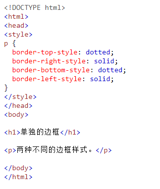
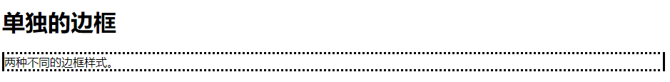

9.3 CSS 边框各边
CSS 边框 - 单独的边
从上一节的例子中，可以看到可以为每一侧指定不同的边框。
在 CSS 中，还有一些属性可用于指定每个边框（顶部、右侧、底部和左侧）：
p {
border-top-style: dotted;
border-right-style: solid;
border-bottom-style: dotted;
border-left-style: solid;
}
示例：
显示如下：

显示如下：

不同的边框样式
上例的结果与此相同：
p {
border-style: dotted solid;
}
它的工作原理是这样的：
如果 border-style 属性设置四个值：
- 上边框是虚线
- 右边框是实线
- 下边框是双线
- 左边框是虚线
如果 border-style 属性设置三个值：
- 上边框是虚线
- 右和左边框是实线
- 下边框是双线
如果 border-style 属性设置两个值：
- 上和下边框是虚线
- 右和左边框是实线
如果 border-style 属性设置一个值：
- 四条边均为虚线
/* 四个值 */
p {
border-style: dotted solid double dashed;
}/* 三个值 */
p {
border-style: dotted solid double;
}/* 两个值 */
p {
border-style: dotted solid;
}/* 一个值 */
p {
border-style: dotted;
}上例中使用的是 border-style属性。但 border-width和
border-color也同样适用。